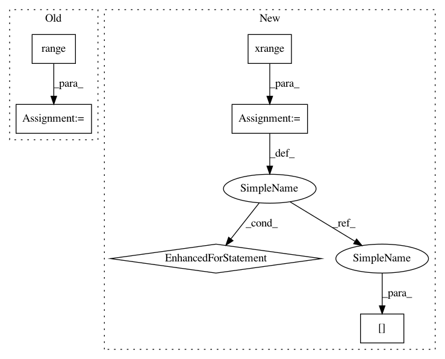

139259ac8ac83160502cbb896371ce4fa4027361,primelib/primelib.py,,sieveEr,#,96
Before Change
// actual sieve of erathostenes
for i in range(len(beginList)):
for j in range(i + 1, len(beginList)):
if (beginList[i] != 0) and \
(beginList[j] % beginList[i] == 0):
beginList[j] = 0
// filters actual prime numbers.
ans = [x for x in beginList if x != 0]
// precondition
assert isinstance(ans, list), ""ans" must been from type list"
After Change
primes = [True for x in xrange(N + 1)]
for p in xrange(2, sqrt(N) + 1):
if (primes[p]):
for i in xrange(p*p, N + 1, p):
primes[i] = False
ret = []
for p in xrange(N + 1):
if primes[p]:
ret.append(p)
In pattern: SUPERPATTERN
Frequency: 3
Non-data size: 6
Instances
Project Name: geekcomputers/Python
Commit Name: 139259ac8ac83160502cbb896371ce4fa4027361
Time: 2019-10-10
Author: ml.smiley3@gmail.com
File Name: primelib/primelib.py
Class Name:
Method Name: sieveEr
Project Name: geekcomputers/Python
Commit Name: 139259ac8ac83160502cbb896371ce4fa4027361
Time: 2019-10-10
Author: ml.smiley3@gmail.com
File Name: primelib/primelib.py
Class Name:
Method Name: sieveEr
Project Name: scikit-learn-contrib/lightning
Commit Name: ab7bfeb252d0c9cbc4cd44a50f7757a53dbd7ecb
Time: 2012-02-29
Author: mathieu@mblondel.org
File Name: lightning/dual_cd.py
Class Name: DualSVC
Method Name: fit
Project Name: scikit-learn-contrib/lightning
Commit Name: ab7bfeb252d0c9cbc4cd44a50f7757a53dbd7ecb
Time: 2012-02-29
Author: mathieu@mblondel.org
File Name: lightning/dual_cd.py
Class Name: DualLinearSVC
Method Name: fit